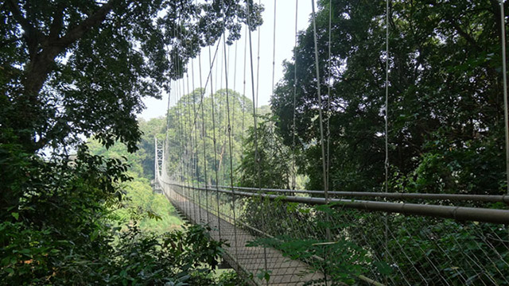

Places to Visit
Mini Ooty

Nilambur teak plantation
Kottakkunnu
Padinharekara Beach

Bounded by the Nilgiris hills on the east and the Arabian Sea on the west, the district of Malappuram literally the land atop the hills, is remarkable for its unique natural beauty. Perched among the undulating hills and the rivers that flow to reach the coconut-fringed seacoast, the land conceals a unique and eventful history.